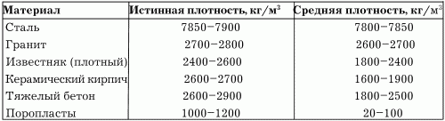

Физические свойства и характеристика строительных материалов.

Строительные материалы обладают следующими физическими свойствами – плотностью, пористостью, водопоглощением, влагоотдачей, огнестойкостью, огнеупорностью, звукопоглощением, морозостойкостью и др.
ПористостьЭта характеристика строительного материала измеряется в процентах и определяется степенью заполнения объема материала порами. Например, пористость металла и стекла равна нулю, кирпича – 30 %, мипоры – почти 100 %. В зависимости от величины пор материалы бывают:
– мелкопористыми;
– крупнопористыми (размеры пор 2–3 см).
ПлотностьПлотность строительного материала бывает истинной и средней. Истинная плотность определяется отношением массы тела (например, бутового камня) к объему без учета имеющихся пор и пустот. Средняя плотность определяется с учетом и пустот, и пор и выражается в соотношении кг/м3. Сталь и кирпич – плотные материалы, иначе говоря, их средняя плотность практически равна истинной. Средняя плотность пористых материалов, – таких, как кирпич и др., – меньше истинной.
Таблица 1. Истинная и средняя плотность строительных материалов
Способность материала поглощать и удерживать влагу называется водопоглощением. Насыщение строительных материалов водой ухудшает их свойства: уменьшает прочность, увеличивает плотность и теплопроводность.
Снижение прочности материала вследствие перенасыщения его водой называется водопроницаемостью и характеризуется коэффициентом размягчения. Водостойкие материалы (к таким относят материалы с пределом коэффициента водостойкости не менее 0,8) используют в конструкциях, находящихся в воде и на участках с повышенной влажностью.
МорозостойкостьСпособность строительных материалов в насыщенном водой состоянии выдерживать неоднократные замораживания с последующим оттаиванием без снижения прочности и массы называется морозостойкостью. Для устройства фундаментов, подвергающихся сезонным замораживаниям и оттаиваниям, используют только материалы с повышенной морозостойкостью. К ним относят плитные материалы или материалы с незначительной открытой пористостью.
Существует 9 степеней морозостойкости – от F10 до F300.
ВлагоотдачаСвойство материала терять находящуюся в его порах влагу называется влагоотдачей. Это свойство материала характеризуется процентным количеством воды, которую строительный материал теряет за сутки при температуре воздуха не менее 20 °C и при относительной влажности воздуха не менее 60 %.
ТеплопроводностьСвойство материалов проводить тепло при наличии разности температур снаружи и внутри строения называется теплопроводностью. Большей теплопроводностью обладают крупнопористые материалы, в то время как материалы с замкнутыми порами менее теплопроводны.
Теплопроводность однородного материала зависит от средней плотности: чем выше плотность, тем выше теплопроводность.
Менее теплопроводными являются сухие материалы по сравнению с влажными.
ОгнеупорностьСвойство материала не деформироваться при длительном воздействии высоких температур называется огнеупорностью. По степени огнеупорности материалы делят на:
– огнеупорные, выдерживающие действие температур 1580 °C и выше. К таким материалам относится шамотный кирпич;
– тугоплавкие, выдерживающие действие температур 1300–1580 °C (тугоплавкий кирпич);
– легкоплавкие, разрушающиеся при температуре ниже 1300 °C.